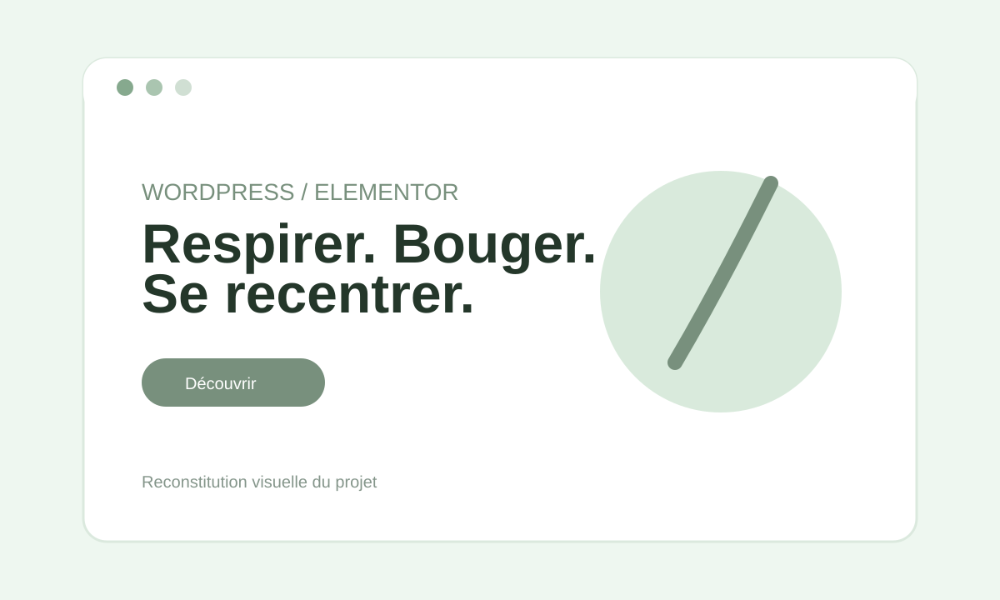

01 · WORDPRESS
Site Yoga
Création et intégration d'un site sous WordPress avec Elementor, avec travail sur la structure des pages, le contenu et le responsive.
Voir les détails
- Création et organisation des pages.
- Intégration du contenu avec Elementor.
- Adaptation mobile et tablette.
- Personnalisation CSS lorsque nécessaire.